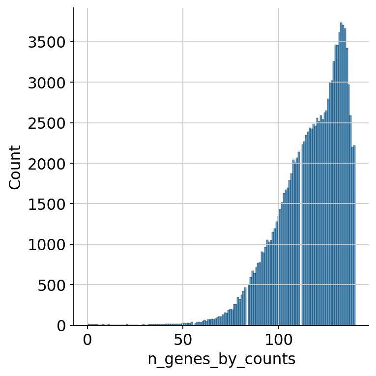
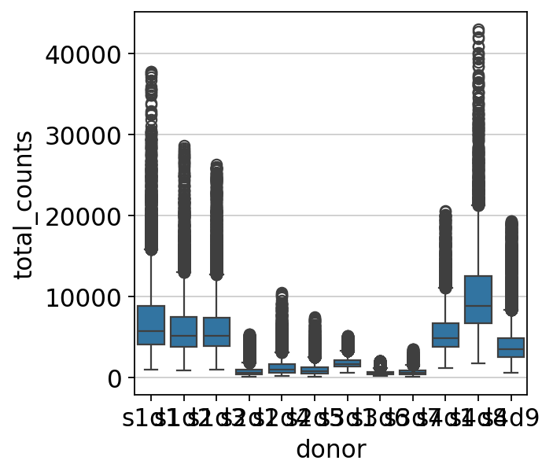

34. 质量控制#
关键要点
单细胞表面蛋白测量是对 RNA-seq 数据的补充，它能改善细胞类型识别，并揭示在转录本层面看不到的处理效应。对 ADT（表面蛋白）数据做质量控制，可以去除蛋白计数过少或过多的细胞。
环境设置
安装 conda:
在创建环境之前，请确保 conda 已安装在您的系统中。
保存 yml 内容:
将 yml 选项卡中的内容复制到名为
environment.yml的文件中。
创建环境:
打开终端或命令提示符。
运行以下命令：
conda env create -f environment.yml
激活环境:
创建好环境后，使用以下命令激活它：
conda activate <environment_name>
替换
<environment_name>，名称就是在environment.yml文件中指定的那个。在 yml 文件里，它看起来像这样：name: <environment_name>
验证安装:
通过运行以下命令，检查环境是否创建成功：
conda env list
name: surface-protein
channels:
- conda-forge
dependencies:
- python=3.13
- scanpy=1.12
- muon=0.1.7
- python-igraph=1.0.0
- ipykernel=7.2.0
- pip==26.0.1
- pip:
- lamindb==2.3.1
- harmonypy==0.0.9
获取数据和笔记本
本书使用 lamindb，并通过 theislab/sc-best-practices 实例 来存储、共享和加载数据集与笔记本。感谢 Lamin Labs 提供免费托管服务。
安装 lamindb
安装 lamindb Python 软件包：
pip install lamindb
可选择创建 lamin 账户
按照以下 说明 注册并登录。
验证你的设置
运行
lamin connect命令：
import lamindb as ln ln.Artifact.connect("theislab/sc-best-practices").df()
你现在应该看到最多 100 个存储的数据集。
访问数据集（Artifact）
在 Artifacts 页面 搜索该数据集。
加载一个 Artifact 及其对应的对象：
import lamindb as ln af = ln.Artifact.connect("theislab/sc-best-practices").get(key="key_of_dataset", is_latest=True) obj = af.load()
该对象现在已可在内存中访问，并可用于分析。请调整
ln.Artifact.connect("theislab/sc-best-practices").get("SOMEIDXXXX")后缀以获取相应的版本。访问笔记本（Transform）
在 Transforms 页面 搜索该笔记本。
加载笔记本：
lamin load <notebook url>
这会把笔记本下载到当前工作目录。与
Artifacts类似，你可以调整后缀 ID 来获取旧版本。
34.1. 动机#
在单细胞分析中，除了只捕获转录组数据之外，我们现在还能够捕获表面蛋白表达的丰度。为此使用的方案通常称为 CITE-seq[Stoeckius et al., 2017]。由于数据分布不同，这种模态所需的预处理与我们前面针对基因表达数据所介绍的并不一样。下面，我们将带你走一遍处理 CITE-seq 数据的流程。由于 CITE-seq 数据为你提供了两种不同的模态，你既可以分别分析，也可以联合分析。这里我们聚焦于数据中的 ADT 部分，并对其做单模态分析。关于 ADT 和 RNA 数据的联合分析，请参阅多模态整合一章。 配对整合.
单细胞 RNA-seq 数据可作为蛋白水平的一个替代指标，在细胞的不同转录状态下与蛋白水平存在部分相关[Liu et al., 2016]。因此，如果想更全面地刻画细胞过程，测量单细胞中的蛋白水平对我们很有价值。对细胞这些方面进行定量，对于理解细胞分化与命运、细胞信号转导通路、疾病进展、扰动以及临床诊断都至关重要[Xie and Ding, 2022].
我们已经可以用单细胞转录组学检测到相关的细胞群。这是很有价值的信息，但如果想更好地理解所研究生物过程中的细胞身份及其动态变化，仅有这些还不够。有了表面蛋白测量，我们就能弥合“由转录定义的身份”与“由蛋白定义的身份”之间的差距——因为合成过程可能存在延迟，而这种延迟在我们的实验中可能很重要。例如，有研究注意到免疫检查点蛋白 ICOS 在经处理细胞的表面上升高了，尽管该蛋白的 mRNA 不同治疗组之间的丰度没有差别[Peterson et al., 2017]。另一个优点是，表面蛋白水平能帮助我们检测到那些可能在转录本层面无法体现的双细胞（doublet）。这可以通过查看细胞类型特异标记的共现来实现[Sun et al., 2021], 双细胞检测.
通过使用带有核苷酸条形码标记的抗体，可以先让抗体结合到细胞上，随后再把条形码与 RNA 一起测序。主要有两种方案：CITE-seq（Cellular Indexing of Transcriptomes and Epitopes by Sequencing）和 REAP-seq（RNA expression and protein sequencing assay）。两者的主要区别在于它们的抗体-寡核苷酸偶联物，也称为抗体衍生标签（Antibody-Derived Tag，ADT）。CITE-seq 使用通过非共价方式结合到生物素化 DNA 条形码上的链霉亲和素（streptavidin）；REAP-seq 则在抗体与 DNA 条形码之间采用共价键连接[Peterson et al., 2017]。此外，在将 CITE-seq 方案整合进多模态检测方面已有进展。其中一个是 DOGMA-seq[Mimitou et al., 2021]，它是 CITE-seq 的一种改良，可以从同一个细胞测量染色质可及性、基因表达和蛋白。该方法包含 ASAP-seq——通过加入一个专门针对 CITE-seq 试剂的桥接寡核苷酸（bridge oligo），把 scATAC-seq 与 ADT 结合起来[Mimitou et al., 2021]。ASAP-seq的优点在于它可以测量表面和细胞内蛋白质。我们将把表面蛋白质测量数据称为ADT数据。

有了 ADT 数据，我们可以基于流式细胞术实验中常用的传统标记来识别细胞类型。这些标记对于特定的免疫细胞群尤其有用。ADT 的优势在于可以同时测量其他模态。不过，我们处理 ADT 数据的方式与处理其他数据不同。与 UMI 计数服从负二项分布不同，ADT 数据更不稀疏：它有一个对应非特异性抗体结合的负峰，以及一个类似于特定细胞表面蛋白富集的正峰[Zheng et al., 2022]。许多实验只包含少量——通常是几十到几百个——感兴趣的抗体。此外，由于 ADT 与转录本是分开的，可以把测序资源集中起来，从而对 ADT 实现更深的覆盖。ADT 数据也可能噪声更大，因为未结合的抗体会在并不存在该蛋白的细胞或空液滴中产生计数。
34.2. 环境设置和数据#
我们使用了一个 CITE-seq 数据集，它是为 2021 年 NeurIPS 会议上的单细胞数据整合挑战而生成的 [Luecken et al., 2021]。该数据集采集了来自 12 位健康人类供体骨髓单个核细胞的单细胞 RNA 和抗体衍生标签（ADT）数据，并在四个不同地点测量，以获得嵌套的批次效应。在本教程中，我们将使用包含 140 种表面蛋白的整个数据集。
我们将使用 scanpy 和 muon[Bredikhin et al., 2022] 分析数据。我们首先要导入操作这个笔记本所需的所有软件包。
import warnings
import muon as mu
import numpy as np
import pandas as pd
import scanpy as sc
import seaborn as sns
from scipy.stats import median_abs_deviation
warnings.filterwarnings("ignore")
mu.set_options(pull_on_update=False)
sc.settings.verbosity = 0
sc.set_figure_params(
dpi=80,
facecolor="white",
frameon=False,
)
import lamindb as ln
ln.track()
→ found notebook quality_control.ipynb, making new version -- anticipating changes
→ created Transform('FATGTTa0bL500005', key='quality_control.ipynb'), started new Run('Jo8rLdu1Zy6ipxks') at 2026-04-10 17:26:28 UTC
→ notebook imports: lamindb-core==2.3.1 muon==0.1.7 numpy==2.4.3 pandas==2.3.3 scanpy==1.12 scipy==1.16.3 seaborn==0.13.2
• recommendation: to identify the notebook across renames, pass the uid: ln.track("FATGTTa0bL50")
34.2.1. 加载 CITE-seq 数据#
接下来，我们现在加载来自 2021 年 NeurIPS 会议单细胞数据整合挑战的 CITE-seq 数据集 [Luecken et al., 2021]。这个 CITE-seq 数据集被组织为一个 MuData 对象。一个 CITE-seq 数据集的 MuData 对象包含对应两种数据模态的两个 AnnData 对象：一个是 RNA 数据的 AnnData 对象，另一个是 ADT（蛋白质）数据的 AnnData 对象。
af = ln.Artifact.connect("theislab/sc-best-practices").get(
key="surface-protein/cite_filtered.h5mu", is_latest=True
)
mdata = af.load()
mdata
MuData object with n_obs × n_vars = 122016 × 36741
var: 'gene_ids', 'feature_types'
2 modalities
rna: 122016 x 36601
obs: 'donor', 'batch'
var: 'gene_ids', 'feature_types'
prot: 122016 x 140
obs: 'donor', 'batch'
var: 'gene_ids', 'feature_types'我们有 122,016 个液滴。RNA 数据包含 36,601 个基因（完整转录组），ADT 数据包含 140 种表面蛋白。这里我们使用过滤后的数据版本，也就是包含所有通过 CellRanger 预处理过滤的条形码。
34.3. 质量控制#
与转录组数据的质量控制和过滤一样，我们需要去除未能捕获到 ADT 的细胞。由于上面提到的 ADT 数据计数分布有着根本性的不同，仅仅照搬前面介绍的转录组学质量控制方法是不合适的。
我们建议首先去除只捕获到很少表面蛋白的细胞。在实践中，这比仅根据 ADT 总计数过滤更稳健。当目标蛋白被成功捕获时，由于许多表面标记呈近乎二值的表达模式（即基本上要么有、要么无，而不是连续变化），ADT 总计数可能会不成比例地增加。因此，在去除未能捕获 ADT 的细胞时，我们建议去除捕获到很少表面蛋白的细胞，而不是去除 ADT 总计数较低的细胞。
sc.pp.calculate_qc_metrics(mdata["prot"], inplace=True, percent_top=None)
我们首先查看所有样本中每个细胞捕获到的 ADT 数量的分布。我们用 seaborn 库来绘图。先看整体范围，可以看到大多数细胞表达 70 到 140 种蛋白。
sns.displot(mdata["prot"].obs.n_genes_by_counts)
<seaborn.axisgrid.FacetGrid at 0x7fdad8db6350>
{kind=link}

那些所检测到的 ADT 标记数量低于某一阈值、且不符合整体分布的细胞，很可能是没有活力的细胞，我们希望把它们过滤掉。因此，我们来看分布的低端：
sns.displot(
mdata["prot"][mdata["prot"].obs.n_genes_by_counts < 70].obs.n_genes_by_counts
)
<seaborn.axisgrid.FacetGrid at 0x7fdacf67bb10>

我们可以在分布中看到一个位于约 55 个 ADT 处的“谷”。这看起来是一个合适的截断值。
接下来，我们基于每个细胞的总计数做同样的事情。从整体范围来看，我们看不出计数分布有任何明显的区间。
sns.displot(mdata["prot"].obs.total_counts)
<seaborn.axisgrid.FacetGrid at 0x7fdad8942850>

我们放大查看总计数分布的高端，以便为最大计数确定一个截断值，因为超过某一阈值的液滴很可能要么包含多个细胞（即所谓的双细胞），要么是抗体人为聚集的结果。
sns.displot(
mdata["prot"].obs.query("total_counts>20000 and total_counts<100000").total_counts
)
<seaborn.axisgrid.FacetGrid at 0x7fdad87f0550>

我们去除蛋白总计数超过 100,000 的细胞，因为从最后两张图可以看出这类细胞非常少，而且它们要么是双细胞，要么是抗体人为聚集的结果。
sc.pp.filter_cells(mdata["prot"], max_counts=100000)
mdata.update()
mu.pp.filter_obs(mdata, mdata["prot"].obs_names)
mdata
MuData object with n_obs × n_vars = 121981 × 36741
var: 'gene_ids', 'feature_types'
2 modalities
rna: 121981 x 36601
obs: 'donor', 'batch'
var: 'gene_ids', 'feature_types'
prot: 121981 x 140
obs: 'donor', 'batch', 'n_genes_by_counts', 'log1p_n_genes_by_counts', 'total_counts', 'log1p_total_counts', 'n_counts'
var: 'gene_ids', 'feature_types', 'n_cells_by_counts', 'mean_counts', 'log1p_mean_counts', 'pct_dropout_by_counts', 'total_counts', 'log1p_total_counts'34.3.1. 按样本进行的质量控制#
现在，我们针对低质量细胞寻找一个更严格的、按样本分别确定的截断值。我们查看各样本中每个细胞计数的分布，看看是否存在差异。由于不同样本之间的总读数和液滴数量可能不同，对所有样本统一套用一个严格的硬截断并不合适。
sns.boxplot(y=mdata["prot"].obs.total_counts, x=mdata["prot"].obs["donor"])
<Axes: xlabel='donor', ylabel='total_counts'>

各样本之间的计数分布并不相同。因此，按样本进行质量控制被认为是合适的。如果把样本 s3d7 与样本 s4d8 做比较，可以看到：一个样本中的离群值，恰好落在另一个样本正常计数的常规分布范围内。
由于我们有相当数量的样本，我们可以像 RNA 预处理章节中描述的那样，自动进行按样本的 QC。
def is_outlier(adata, metric: str, nmads: int):
M = adata.obs[metric]
outlier = (M < np.median(M) - nmads * median_abs_deviation(M)) | (
np.median(M) + nmads * median_abs_deviation(M) < M
)
return outlier
outliers = []
for sample in np.unique(mdata["prot"].obs["donor"]):
adata_temp = mdata["prot"][mdata["prot"].obs["donor"] == sample].copy()
adata_temp.obs["outlier"] = is_outlier(
adata_temp, "log1p_total_counts", 5
) | is_outlier(adata_temp, "log1p_n_genes_by_counts", 5)
outliers.append(adata_temp.obs["outlier"])
print(f"{sample}: outliers {adata_temp.obs.outlier.value_counts()[True]}")
s1d1: outliers 206
s1d2: outliers 209
s1d3: outliers 227
s2d1: outliers 340
s2d4: outliers 189
s2d5: outliers 150
s3d1: outliers 339
s3d6: outliers 492
s3d7: outliers 338
s4d1: outliers 245
s4d8: outliers 184
s4d9: outliers 499
mdata["prot"].obs["outliers"] = pd.concat(outliers)
mdata["prot"].obs.head()
| donor | batch | n_genes_by_counts | log1p_n_genes_by_counts | total_counts | log1p_total_counts | n_counts | outliers | |
|---|---|---|---|---|---|---|---|---|
| AAACCCAAGGATGGCT-1-0-0-0-0-0-0-0-0-0-0-0 | s1d1 | 0 | 124 | 4.828314 | 6483.0 | 8.777093 | 6483.0 | False |
| AAACCCAAGGCCTAGA-1-0-0-0-0-0-0-0-0-0-0-0 | s1d1 | 0 | 140 | 4.948760 | 19711.0 | 9.888983 | 19711.0 | False |
| AAACCCAAGTGAGTGC-1-0-0-0-0-0-0-0-0-0-0-0 | s1d1 | 0 | 120 | 4.795791 | 3349.0 | 8.116715 | 3349.0 | False |
| AAACCCACAAGAGGCT-1-0-0-0-0-0-0-0-0-0-0-0 | s1d1 | 0 | 128 | 4.859812 | 7841.0 | 8.967249 | 7841.0 | False |
| AAACCCACATCGTGGC-1-0-0-0-0-0-0-0-0-0-0-0 | s1d1 | 0 | 114 | 4.744932 | 2462.0 | 7.809135 | 2462.0 | False |
现在，我们实际地过滤掉这些离群值：
mdata = mdata[~mdata["prot"].obs["outliers"]].copy()
mdata
MuData object with n_obs × n_vars = 118563 × 36741
var: 'gene_ids', 'feature_types'
2 modalities
rna: 118563 x 36601
obs: 'donor', 'batch'
var: 'gene_ids', 'feature_types'
prot: 118563 x 140
obs: 'donor', 'batch', 'n_genes_by_counts', 'log1p_n_genes_by_counts', 'total_counts', 'log1p_total_counts', 'n_counts', 'outliers'
var: 'gene_ids', 'feature_types', 'n_cells_by_counts', 'mean_counts', 'log1p_mean_counts', 'pct_dropout_by_counts', 'total_counts', 'log1p_total_counts'在这次过滤中，我们去除了约 3,500 个细胞，大约占细胞总数的 3%。这是一种相对宽松的过滤，后续我们可能还需要进一步过滤双细胞。
sns.boxplot(y=mdata["prot"].obs.total_counts, x=mdata["prot"].obs["donor"])
<Axes: xlabel='donor', ylabel='total_counts'>
{kind=link}

正如上图所示，现在每个样本的离群点都已分别被过滤掉。为了把各样本的数值带到相近的范围内，我们需要对数据进行归一化。
af_quality_control = ln.Artifact.from_mudata(
mdata,
key="surface-protein/cite_quality_control.h5mu",
description="CITE-seq filtered data after quality control",
)
af_quality_control.save()
ln.finish()
34.4. 参考文献#
Danila Bredikhin, Ilia Kats, and Oliver Stegle. MUON: multimodal omics analysis framework. Genome Biology, feb 2022. URL: https://doi.org/10.1186%2Fs13059-021-02577-8, doi:10.1186/s13059-021-02577-8.
Yansheng Liu, Andreas Beyer, and Ruedi Aebersold. On the dependency of cellular protein levels on mrna abundance. Cell, 165(3):535–550, Apr 2016. doi:10.1016/j.cell.2016.03.014.
Malte D Luecken, Daniel Bernard Burkhardt, Robrecht Cannoodt, Christopher Lance, Aditi Agrawal, Hananeh Aliee, Ann T Chen, Louise Deconinck, Angela M Detweiler, Alejandro A Granados, Shelly Huynh, Laura Isacco, Yang Joon Kim, Dominik Klein, BONY DE KUMAR, Sunil Kuppasani, Heiko Lickert, Aaron McGeever, Honey Mekonen, Joaquin Caceres Melgarejo, Maurizio Morri, Michaela Müller, Norma Neff, Sheryl Paul, Bastian Rieck, Kaylie Schneider, Scott Steelman, Michael Sterr, Daniel J. Treacy, Alexander Tong, Alexandra-Chloe Villani, Guilin Wang, Jia Yan, Ce Zhang, Angela Oliveira Pisco, Smita Krishnaswamy, Fabian J Theis, and Jonathan M. Bloom. A sandbox for prediction and integration of DNA, RNA, and proteins in single cells. In Thirty-fifth Conference on Neural Information Processing Systems Datasets and Benchmarks Track (Round 2). 2021. URL: https://openreview.net/forum?id=gN35BGa1Rt.
Eleni P. Mimitou, Caleb A. Lareau, Kelvin Y. Chen, Andre L. Zorzetto-Fernandes, Yuhan Hao, Yusuke Takeshima, Wendy Luo, Tse-Shun Huang, Bertrand Z. Yeung, Efthymia Papalexi, Pratiksha I. Thakore, Tatsuya Kibayashi, James Badger Wing, Mayu Hata, Rahul Satija, Kristopher L. Nazor, Shimon Sakaguchi, Leif S. Ludwig, Vijay G. Sankaran, Aviv Regev, and Peter Smibert. Scalable, multimodal profiling of chromatin accessibility, gene expression and protein levels in single cells. Nature Biotechnology, 39(1010):1246–1258, Oct 2021. doi:10.1038/s41587-021-00927-2.
Vanessa M. Peterson, Kelvin Xi Zhang, Namit Kumar, Jerelyn Wong, Lixia Li, Douglas C. Wilson, Renee Moore, Terrill K. McClanahan, Svetlana Sadekova, and Joel A. Klappenbach. Multiplexed quantification of proteins and transcripts in single cells. Nature Biotechnology, 35(1010):936–939, Oct 2017. doi:10.1038/nbt.3973.
Marlon Stoeckius, Christoph Hafemeister, William Stephenson, Brian Houck-Loomis, Pratip K. Chattopadhyay, Harold Swerdlow, Rahul Satija, and Peter Smibert. Simultaneous epitope and transcriptome measurement in single cells. Nature Methods, 14(9):865–868, Sep 2017. URL: https://doi.org/10.1038/nmeth.4380, doi:10.1038/nmeth.4380.
Bo Sun, Emmanuel Bugarin-Estrada, Lauren Elizabeth Overend, Catherine Elizabeth Walker, Felicia Anna Tucci, and Rachael Jennifer Mary Bashford-Rogers. Double-jeopardy: scrna-seq doublet/multiplet detection using multi-omic profiling. Cell Reports Methods, 1(1):100008, May 2021. doi:10.1016/j.crmeth.2021.100008.
Haiyang Xie and Xianting Ding. The intriguing landscape of single-cell protein analysis. Advanced Science, n/a(n/a):2105932, 2022. doi:10.1002/advs.202105932.
Ye Zheng, Seong-Hwan Jun, Yuan Tian, Mair Florian, and Raphael Gottardo. Robust normalization and integration of single-cell protein expression across cite-seq datasets. bioRxiv, 2022. URL: https://www.biorxiv.org/content/early/2022/05/01/2022.04.29.489989, arXiv:https://www.biorxiv.org/content/early/2022/05/01/2022.04.29.489989.full.pdf, doi:10.1101/2022.04.29.489989.
34.5. 贡献者#
我们衷心感谢以下人员的贡献：
34.5.2. 审阅者#
Lukas Heumos